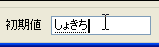

データベースの新規作成はテーブルの新規作成のあとデータベースの保存場所を指定します。
テーブルウィンドウのテーブルボタンをクリックしてテーブル一覧が表示されている状態で 新規作成をクリックするとテーブル名の入力からテーブルの作成が始まります。
またデータベースの新規作成ではメインメニュの 新規作成をクリックすると同じようにテーブル名の設定からテーブルの新規作成が始まります。
作成するテーブルの名前を入力します。. (ピリオド) ] (半角大カッコ)は使用できません。
作成するフィールドの名前を入力します。. (ピリオド) ] (半角大カッコ)は使用できません。
初期値の設定
次にフィールドのデータ型と制約を入力します
データ型は下記の４つをサポートしています。
フィールドの制約では、NULLの可否と重複の可否を設定します。
NULLが不可(NG)の場合はそのフィールドの初期値を設定してください。
次にフィールドのインデックスの設定とコメントの入力をします。
フィールドにインデックスを設定するとそのフィールドの(SQL内での)検索が早くなりますが更新はその分遅くなります。
ここまでの入力がすべて完了したら｢OK｣ボタンをクリックしてテーブルの作成を完了してください。
Copyright(C) 2008-2013 Pup All Rights Reserved.